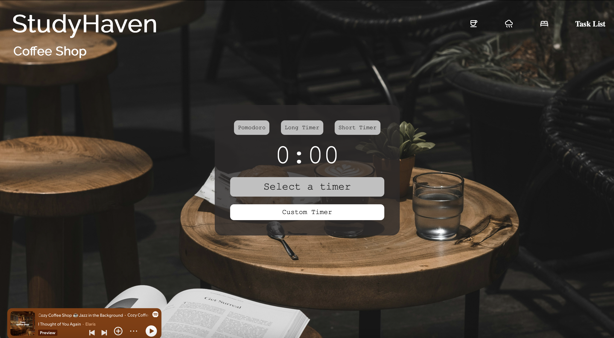
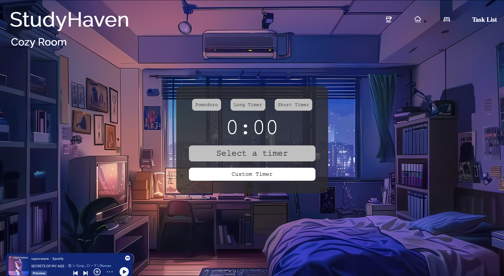

Project Overview
Timeline
Six week product design and engineering sprint conducted at the University of Washington. The project moved from early behavioral research through interaction design and finally into a fully functioning front-end prototype.
Role
I led the product concept, user research synthesis, interface design, and front-end development. This included designing the study environments in Figma, building the interface in HTML/CSS, and implementing the focus timer and task system with JavaScript.
Core Goal
Reduce the cognitive friction that happens before studying begins by creating a consistent ritual for starting work. Instead of switching between multiple tools, students enter one environment designed specifically for focus.
Context & Constraints
StudyHaven was developed within an academic setting. The goal was not to build something visually impressive, it was to create a functional web application that addressed an actual behavioral friction.
The primary constraint was time. The project was completed within six weeks, which required prioritizing clarity over complexity. Backend infrastructure was intentionally excluded, meaning all system logic had to operate entirely on the front end.
This limitation shaped the architecture. State persistence, task management, and timer logic had to be handled through JavaScript and LocalStorage alone. Every feature needed to be lightweight, deliberate, and technically feasible within those boundaries.
Rather than seeing these constraints as limitations, I treated them as design parameters. They forced focus. They required precision. They ensured that every decision supported the core behavioral insight rather than expanding the scope unnecessarily.
The Problem
Through interviews with UW Seattle students, a clear pattern emerged. The most difficult part of studying was not the work itself. It was starting.
Students described opening multiple tabs before even choosing what to work on. They switched between Spotify, Notion, Canvas, Google Docs, and YouTube within minutes. Each small decision felt insignificant on its own, but together they created friction. By the time they were ready to focus, their mental energy was already depleted.
What initially appeared to be procrastination was often decision fatigue. Choosing music. Choosing a timer. Choosing which task to begin. Choosing where to track progress. The abundance of tools meant no single space felt complete.
There was also no consistent ritual. Without a repeatable starting environment, every study session required rebuilding the setup from scratch. This lack of continuity made focus feel temporary rather than sustained.
Most importantly, accountability dissolved between sessions. Tasks were scattered across apps. Progress was invisible. When students returned the next day, it felt like beginning again.
The core problem was not productivity. It was cognitive overload before productivity even began.
Personas
Olivia Martinez
Junior majoring in Political Science. Balances part time work and full course load. Often opens multiple tabs before studying and spends too long deciding how to begin. Feels mentally drained before the actual work starts.
Needs a clear starting ritual and fewer choices. Values aesthetic environments but struggles with over customization.
Daniel Kim
Sophomore in Computer Science. Loves structure and tracking progress. Already motivated but lacks an integrated system that combines timer, task tracking, and ambient focus.
Wants visible progress and accountability. Prefers minimal interfaces that reduce distraction.
Themed Study Rooms



Technical Deep Dive
The core of StudyHaven was built entirely on front end logic. Every interaction had to feel immediate while still maintaining state across sessions.
I built a custom timer state system that controlled transitions between idle, focus, and break modes. Instead of relying on a simple countdown, the logic accounted for resets, manual interruptions, and edge cases where users refreshed mid session.
The interface dynamically renders task lists and focus themes using JavaScript. Elements are not static. They are created, filtered, and removed in real time through DOM manipulation.
LocalStorage was used to preserve task state, session history, and theme selection. This allowed users to return without losing their structure. Managing delete and filter cases required careful logic so that removing a task would not break index ordering or stored data.
Theme switching was handled through controlled class injection. Rather than reloading the page, the design updates instantly while maintaining active session state.
Impact & Metrics
After testing with students, the feedback consistently pointed toward reduced friction at the beginning of study sessions.
Participants reported starting their sessions faster because they no longer had to make multiple small decisions before focusing. The limited themes and built in timer reduced the mental overhead that normally delays productivity.
Several students shared that seeing their tasks remain saved between sessions increased their sense of accountability. Progress felt continuous rather than temporary.
Users also reported reduced tab switching because StudyHaven combined timer, ambient environment, and task tracking into one controlled space. This consolidation directly reduced digital distraction.
Reflection
This was such a meaningful project for me. I put a lot of thought and care into every decision. It was definitely work, but I truly enjoyed it. I probably spent more time refining the small details than I needed to, but that process felt important. Adjusting spacing, testing color shifts, rethinking flows. It helped me understand how much subtle friction shapes behavior.
What stood out most was realizing that the hardest part of studying is often not the studying itself. It is beginning. That moment of hesitation carries more weight than we admit. Designing something that reduces that psychological resistance felt far more powerful than adding more features.
I learned that clarity can be more supportive than flexibility. Constrained choice does not limit users. It guides them. Building StudyHaven made me more aware of how design shapes behavior long before someone clicks a button.
More than anything, this project reminded me that good product design is not about complexity. It is about removing what does not need to be there and protecting the mental space of the person using it.